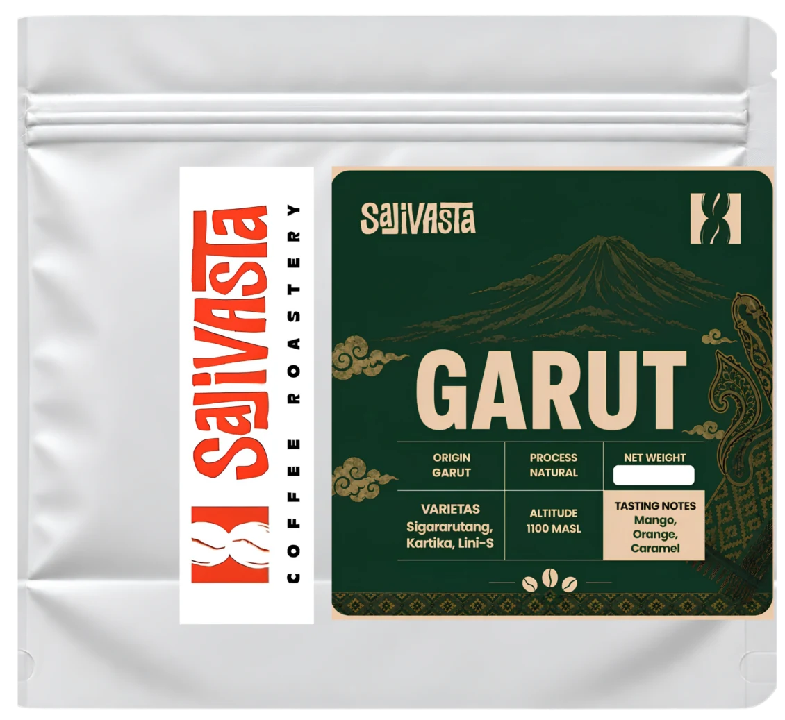

Kopi dari IndonesiaKenali asalnya.
Kenali asalnya.
Temukan rasanya.
Dari Garut hingga Mandailing. Tiga pilihan kopi dengan karakter yang bisa Anda jelajahi satu per satu.

3 kopi dalam koleksi
Perbedaannya,
dalam satu pandangan.
| Karakter | Garut Natural | Sumatra Mandailing Full Wash | Sumatra Mandailing Natural |
|---|---|---|---|
| Asal | Garut, Jawa Barat | Mandailing, Sumatra | Mandailing, Sumatra |
| Proses | Natural | Full Wash | Natural |
| Nuansa rasa | Mango · Orange · Caramel | Citrus · Lemon · Brown Sugar | Brown Sugar · Fruity · Cinnamon |
| Karakter | Buah yang cerah, dengan akhir yang manis. | Segar, bersih, dan seimbang. | Manisnya buah, hangatnya rempah. |
| Pilihan ukuran | 200 g / 500 g / 1 kg | 200 g / 500 g / 1 kg | 200 g / 500 g / 1 kg |
Deskripsi rasa mengikuti katalog Sajivasta. Hasil seduhan dapat berbeda sesuai air, gilingan, dan metode seduh.
Satu percakapan, banyak kemungkinan.Mari temukan kopi
Bicara tentang kopi